There are many ways to represent the same numeric value. Long ago, humans used
sticks to count, and later learned how to draw pictures of sticks in the ground
and eventually on paper. So, the number 5 was first represented as:
| |
| | | (for five sticks).
Later on, the Romans began using different symbols for multiple numbers
of sticks:| |
| still meant three sticks,
but a V
now meant five sticks,
and an X was used to represent ten of them.
Using sticks to count was a great idea for its time. And using
symbols instead of real sticks was much better.
Decimal System
Most people today use decimal representation to count.
In the decimal system there are 10 digits:
0, 1, 2, 3, 4, 5, 6, 7, 8, 9
These digits can represent any value, for example: 754.
The value is formed by the sum of each digit, multiplied by
the base (in this case it is 10 because there are
10 digits in decimal system) in power of digit position (counting from zero):
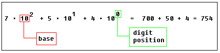
Position of each digit is very important!
for example if you place "7" to the end: 547
it will be another value:
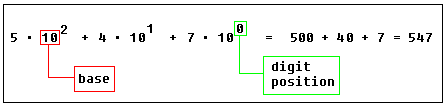
Important note: any number in power of zero is 1, even
zero in power of zero is 1:
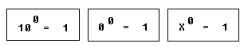
Binary System
Computers are not as smart as humans are (or not yet),
it's easy to make an electronic machine with two states: on and off,
or 1 and 0.
Computers use binary system, binary system uses 2 digits:
0, 1
And thus the base is 2.
Each digit in a binary number is called a BIT, 4 bits form a NIBBLE,
8 bits form a BYTE, two bytes form a WORD, two words form
a DOUBLE WORD (rarely used):
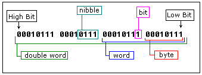
There is a convention to add "b" in the end of a binary number, this way we
can determine that 101b is a binary number with decimal value of 5.
The binary number 10100101b equals to decimal value of 165:
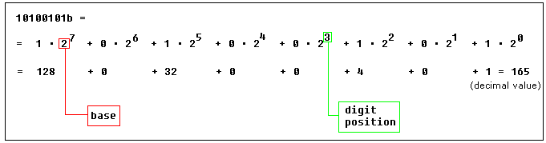
Hexadecimal System
Hexadecimal System uses 16 digits:
0, 1, 2, 3, 4, 5, 6, 7, 8, 9, A, B, C, D, E, F
And thus the base is 16.
Hexadecimal numbers are compact and easy to read.
It is very easy to convert numbers from binary system to hexadecimal system and vice-versa,
every nibble (4 bits) can be converted to a hexadecimal digit using this table:
Decimal (base 10)
Binary (base 2)
Hexadecimal (base 16)
0
0000
0
1
0001
1
2
0010
2
3
0011
3
4
0100
4
5
0101
5
6
0110
6
7
0111
7
8
1000
8
9
1001
9
10
1010
A
11
1011
B
12
1100
C
13
1101
D
14
1110
E
15
1111
F
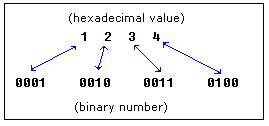
There is a convention to add "h" in the end of a hexadecimal number, this way we
can determine that 5Fh is a hexadecimal number with decimal value of 95.
We also add "0" (zero) in the beginning of hexadecimal numbers that begin with a letter (A..F),
for example 0E120h.
The hexadecimal number 1234h is equal to decimal value of 4660:
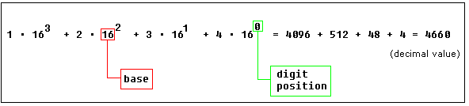
Converting from Decimal System to Any Other
In order to convert from decimal system, to any other system, it is required
to divide the decimal value by the base of the desired system, each time
you should remember the result and keep the remainder, the
divide process continues until the result is zero.
The remainders are then used to represent a value in that system.
Let's convert the value of 39 (base 10) to
Hexadecimal System (base 16):
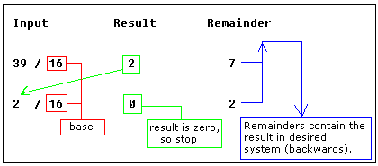
As you see we got this hexadecimal number: 27h.
All remainders were below 10 in the above example, so
we do not use any letters.
Here is another more complex example:
let's convert decimal number 43868 to hexadecimal form:
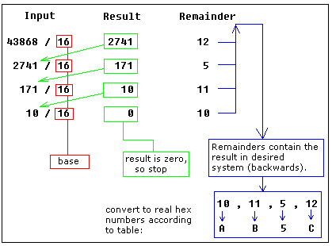
The result is 0AB5Ch, we are using the above table
to convert remainders over 9 to corresponding letters.
Using the same principle we can convert to binary form (using 2 as the divider),
or convert to hexadecimal number, and then convert it to binary number using
the above table:
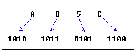
As you see we got this binary number: 1010101101011100b
Signed Numbers
There is no way to say for sure whether the hexadecimal byte 0FFh is
positive or negative, it can represent both decimal value "255" and "- 1".
8 bits can be used to create 256 combinations (including zero), so we simply
presume that first 128 combinations (0..127) will represent positive numbers
and next 128 combinations (128..256) will represent negative numbers.
In order to get "- 5", we should subtract 5 from the number of
combinations (256), so it we'll get: 256 - 5 = 251.
Using this complex way to represent negative numbers has some meaning, in math
when you add "- 5" to "5" you should get zero.
This is what happens when processor adds two bytes 5 and 251,
the result gets over 255, because of the overflow processor gets zero!
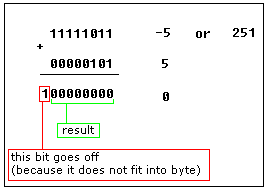
When combinations 128..256 are used the high bit is always 1, so
this maybe used to determine the sign of a number.
The same principle is used for words (16 bit values),
16 bits create 65536 combinations, first 32768 combinations (0..32767)
are used to represent positive numbers, and next 32768 combinations (32767..65535)
represent negative numbers.
There are some handy tools in emu8086 to convert numbers, and make
calculations of any numerical expressions, all you need is a
click on Math menu:
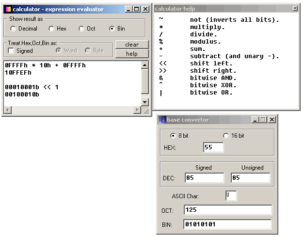
Base converter allows you to convert numbers from any system and
to any system. Just type a value in any text-box, and the value
will be automatically converted to all other systems. You can work both
with 8 bit and 16 bit values.
Multi base calculator can be used to make calculations between
numbers in different systems and convert numbers from one system to another.
Type an expression and press enter, result will appear in chosen numbering system.
You can work with values up to 32 bits. When Signed is checked
evaluator assumes that all values (except decimal and double words) should be treated as
signed. Double words are always treated as signed values, so
0FFFFFFFFh is converted to -1.
For example you want to calculate:
0FFFFh * 10h + 0FFFFh
(maximum memory location that can be accessed by 8086 CPU).
If you check Signed and Word you will get
-17 (because it is evaluated as
(-1) * 16 + (-1) . To make
calculation with unsigned values uncheck Signed
so that the evaluation will be 65535 * 16 + 65535
and you should get 1114095.
You can also use the base converter to convert
non-decimal digits to signed decimal values, and
do the calculation with decimal values (if it's easier for you).